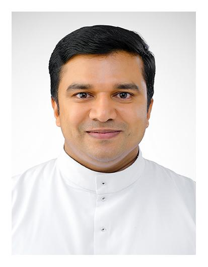

Archbishop Mar Thomas Tharayil
Depth Psychology Lic. & Ph.D. (Gregorian, Rome)
Very Rev. Fr. Scaria Kanniyakonil
Syncellus Ph.D. (Belgium)
Fr. Anish Ettakakunnel, Ph.D.
Director Ph.D. (Texas, USA)
Dr. Mekattukunnel Andrews
Scripture S.T.D (Gregorian, Rome)
Dr. Linta S.H.
Biblical Theology S.T.D (Rome)
Sri. Cheriyan P.G.
Statistics MCom (MG University)
Sr. Philomina Uthuppan
Depth Psychology Lic. (Gregorian, Rome)
Dr. Jeslet CMC
Clinical Psychology Ph.D. (Manila)
Dr. Pulickal Varghese
Communication S.T.D (Rome)
Dr. Antony (Manoj)
Theology D.Th. (Gregorian, Rome)
Sri. John Rolince
Transactional Analysis MCom, MSc, MTA
Fr. Pathalil John (Tijo)
Counselling Psychology MSc (Christ University Bangalore)
Fr. Pathalil John (Tijo)
Counselling Psychology MSc (Christ University Bangalore)